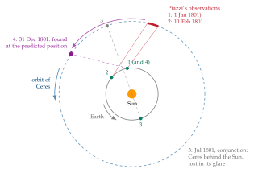
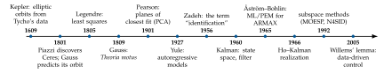

Chapter 1Introduction
Given a finite record of measurements collected on a real phenomenon, how can we compute a mathematical model that not only explains the data we have seen, but also predicts the data we have not seen yet?
This is the question of model identification, and it is much older than the discipline that today bears the name system identification. This chapter sketches its history, from the determination of planetary orbits to the identification of dynamical systems for control, and then describes the content and the structure of these notes.
1.1 Models from data: an old problem
Every quantitative science lives on models: compact mathematical descriptions of a phenomenon, depending on a few parameters, that summarize a large amount of observations and allow one to reason about situations that have not been observed. A model is useful precisely because it generalizes: it makes predictions.
Astronomy offered the first great examples. Between 1600 and 1609 Johannes Kepler, working on the very accurate observations of the planet Mars collected by Tycho Brahe over two decades, abandoned the circles and epicycles of the Ptolemaic and Copernican tradition and found that the orbit is an ellipse with the Sun in one focus (Astronomia nova, 1609). In modern language, Kepler chose a model class (conic sections), estimated its parameters from the data, and validated the result by checking that the residual discrepancies were compatible with the accuracy of the observations: the famous eight arc-minutes of disagreement between Tycho’s data and the best circular model were too large to be attributed to measurement errors, and this is what forced him to change model class. Some decades later Newton’s theory of gravitation explained why the orbits are conic sections, turning a data-driven model into a physical law.
Two features of these problems are worth stressing, because they will accompany us for the whole course. First, the data are always more numerous than the parameters, and they are affected by errors: no model passes exactly through all the observations, so one needs a principled way of combining redundant, inconsistent data. Second, the goal is not merely to describe the past but to predict: the quality of a model is ultimately judged on observations that were not used to build it.
1.2 The lost planet and the invention of least squares
On the night of 1 January 1801, the astronomer Giuseppe Piazzi, at the observatory of Palermo, noticed a faint star that was not in the catalogues and that moved slightly from night to night. He followed it for about six weeks, until 11 February, when an illness interrupted his work: a couple of dozen positions, covering an arc of only about three degrees of the sky. During those weeks Ceres was an evening object, well away from the Sun (between about \(130^\circ\) and \(95^\circ\) of angular distance), but the Earth, which moves along its orbit much faster than Ceres, was steadily “overtaking” it, so that the planet was drifting towards the direction of the Sun. By the time the news of the discovery had reached the other astronomers, Ceres was too close to the Sun in the sky to be observed: in July 1801 it passed behind the Sun (conjunction) and remained lost in its glare for months (Figure 1.1). It was the first minor planet ever discovered. The problem was now to find it again: in the autumn Ceres would reappear in the morning sky, on the other side of the Sun, after having travelled some \(70^\circ\) along its orbit, but where? Determining a complete orbit (six orbital elements) from such a short arc of noisy angular measurements was considered by many astronomers of the time to be practically impossible, and the first attempts, based on simplifying assumptions such as circular orbits, did not lead to a reliable prediction.
The 24-year-old Carl Friedrich Gauss took up the problem in the autumn of 1801. He developed a new method to determine an elliptic orbit from a few observations, refined the solution by using all of Piazzi’s measurements, and published a prediction of the position of Ceres for the end of the year. On 31 December 1801 Franz Xaver von Zach found the planet very close to the predicted position, and Heinrich Olbers confirmed the observation the following night. The rediscovery made Gauss famous overnight.

In his treatise Theoria motus corporum coelestium in sectionibus conicis solem ambientium (1809) [24], Gauss explained that the best way of combining redundant observations affected by errors is to choose the parameters that minimize the sum of the squares of the residuals, and stated that he had been using this principle since 1795. The method had however already been published by Adrien-Marie Legendre in 1805, in an appendix to his Nouvelles méthodes pour la détermination des orbites des comètes [25], where it was introduced with the name méthode des moindres quarrés, as a practical and elegant rule to solve overdetermined systems of equations. The ensuing priority dispute is one of the most famous in the history of mathematics; historians still discuss to what extent the Ceres computation of 1801 actually relied on least squares [26]. What is certain is that the two contributions are complementary: Legendre gave the method its name and its first clear algebraic statement; Gauss gave it a probabilistic justification, showing that least squares yields the most probable parameters when the errors follow what we now call the Gaussian (normal) distribution, and later (1821–1823) proved that, among all linear unbiased combinations of the observations, least squares has the smallest variance, whatever the distribution of the errors. This last result, rediscovered by Andrey Markov at the beginning of the twentieth century, is the Gauss–Markov theorem of Section 4.5.
It is instructive to reread the story of Ceres with the vocabulary of this course. The model class was given by physics (Keplerian orbits, i.e. conic sections with the Sun in a focus, parametrized by six orbital elements); the data were a set of noisy measurements, more numerous than the unknowns; the estimation step combined all of them by minimizing a quadratic measure of the residuals; and the validation was the most demanding one can imagine: a prediction on future, unseen data, confirmed by an independent observer. The determination of the orbit of Ceres can be regarded as the first great problem of identification of a model (a curve, an orbit) from experimental measurements, and least squares, the tool invented to solve it, is still the backbone of the whole discipline: it will be studied in Chapter 4 and it will reappear in every subsequent chapter, from the estimation of ARX models (Chapter 6) to the computation of the matrices \(B\), \(D\) and of the initial state in subspace identification (Chapter 8).
1.3 From curves to dynamical systems
Orbits and curves are static models: a relation \(y=f(t;\theta)\) between variables, parametrized by \(\theta\), in which the value of \(y\) is determined by the current value of the independent variable only. Many engineering problems lead to static models as well: the calibration of a sensor, the characteristic curve of a component, the fitting of a polynomial to experimental data, the reduction of the dimension of a dataset (principal component analysis). A dynamical system, instead, has memory: its output at time \(k\) depends on the whole past history of its inputs, through an internal state. The models of interest are then difference (or differential) equations, and the problem of identification becomes: from a record of input and output signals, find the equations that generated them.
The statistical foundations of this extension were laid in the nineteenth and early twentieth centuries: Francis Galton introduced regression (1886); Karl Pearson formulated the fitting of lines and planes of closest (orthogonal) distance to points in space (1901), the ancestor of principal component analysis and of total least squares; Ronald A. Fisher developed the theory of maximum-likelihood estimation (1912–1922); George Udny Yule introduced autoregressive models to study the periodicity of sunspot numbers (1927), the first models of the kind \(y(k)=a_1y(k-1)+a_2y(k-2)+e(k)\) that we shall meet in Chapter 6. In the 1940s Norbert Wiener and Andrey Kolmogorov founded the theory of optimal prediction and filtering of stationary random signals.
The decisive step came with the state-space revolution of the 1960s. Rudolf E. Kalman introduced the concepts of reachability and observability and the Kalman filter (1960) [28], and with B. L. Ho [9] gave the first algorithm to construct a state-space model from the impulse response of a system (1966, Chapter 7). The very term identification had been introduced a few years earlier by Lotfi Zadeh (1956) [27], who later (1962) defined it as the determination, on the basis of input and output data, of a system within a specified class to which the system under test is equivalent. In 1965 Karl Johan Å ström and Torsten Bohlin presented the maximum-likelihood identification of ARMAX models from normal operating records [29], a milestone of the prediction-error approach; the first IFAC Symposium on Identification was held in Prague in 1967, and the survey by Å ström and Eykhoff (1971) [30] consolidated the new discipline. The book by Box and Jenkins (1970) [31] popularized time-series models for forecasting and control; Hirotugu Akaike introduced information criteria for model-order selection (1974) [32]; Lennart Ljung’s book [5] (1987) gave the prediction-error framework its definitive form. Around 1990 the subspace methods (Larimore’s CVA, Verhaegen and Dewilde’s MOESP, Van Overschee and De Moor’s N4SID [11, 8]) brought back the ideas of Ho and Kalman in a statistical setting, relying only on numerically robust tools of linear algebra (Chapter 8). More recently, Willems’ fundamental lemma (2005) [13] has become the starting point of the data-driven control approaches, in which controllers are designed directly from data matrices, and the interaction with machine learning (kernel methods, neural networks) is one of the most active research fields. Figure 1.2 summarizes some of these milestones.

1.4 Why models matter in systems and control
In engineering, and in particular in systems and control engineering, a model is rarely the final goal in itself: it is a tool for a purpose.
Control design. Almost all modern control techniques (pole placement, LQ and LQG control, \(\mathcal H_\infty\) design, model predictive control) are model based: the controller is computed from a model of the plant, typically in state-space form.
State estimation. The Kalman filter (and observers) reconstruct the non-measured state variables of a system from its inputs and outputs, but they require the matrices \(A,B,C,D\) and a description of the noise: identification is the natural companion of filtering.
Simulation and prediction. Models allow one to test a design in simulation before implementing it, to forecast the future behaviour of a process, and to build the so-called digital twins of complex plants.
Monitoring and diagnosis. Deviations between measured outputs and those predicted by a model are the basis of fault detection and condition monitoring.
Models can be obtained from first principles (e.g., mass and energy balances, Newton’s and Kirchhoff’s laws, etc.), but for many real systems this is too costly, too inaccurate, or simply impossible: parameters are unknown, phenomena are too complex, components age. System identification builds models from experimental data, either completely (black-box models) or by estimating the unknown parameters of a physically motivated structure (grey-box models). In both cases the model is an approximation. George Box’s aphorism that “all models are wrong but some are useful” summarizes the right attitude: a model has to be judged with respect to its intended use, and a model that is excellent for control design may be poor for long-term simulation, and vice versa. This is why identification is an iterative procedure, in which experiment design, choice of the model class, estimation and validation are repeated until the model is fit for its purpose (Section 5.3).
Compared with the example of determining the orbit of a planet (or the parameters of a curve), the identification of dynamical systems adds two difficulties. The first is that the data are signals, correlated in time, and the experiment itself (the choice of the input) determines how much information they carry about the system: the notion of persistency of excitation (Section 5.5) will play a major role. The second is that the unknowns are not a few numbers with a clear physical meaning, but matrices defined only up to a change of coordinates of the state space: only input–output properties can be identified, and only the reachable and observable part of a system can be seen from data (Section 5.2).
1.5 Content and structure of these notes
These notes are an extended version of the lectures given by the author for the model-identification part (30 hours) of the course System Identification and Data Analysis, offered to Control Systems and Automation Engineering students.
The final problem addressed in the course is the following: given a finite record \(\{u(k),y(k)\}_{k=0}^{N-1}\) of input–output data collected on a real system, compute a linear time-invariant model
that is, the matrices \(\{A,B,C,D,x(0)\}\), up to a change of state coordinates, or an equivalent input–output model. In proper system identification techniques, \(v(k)\) is modeled, and is a measurement noise acting on \(y(k)\). Also a process noise \(w(k)\), that accounts for inaccuracies in modeling or different kind of process errors, can be added to the state equation. In deterministic techniques (such as realization ones), no noise is modeled.
The route followed in this notes is inspired from some insightful textbooks on the topic. Among these, the book by Verhaegen and Verdult [1] is relevant. We start with a toolbox of numerical linear algebra, then the classical prediction-error approach for input–output polynomial models, and finally, through the Ho–Kalman realization algorithm, the subspace identification methods, which deliver state-space models directly using only SVDs, QR factorizations and least squares.
Chapter 2 reviews the fundamentals of linear algebra: matrices as linear maps, the four fundamental subspaces, eigenvalues and eigenvectors, the QR decomposition and some rank results used later.
Chapter 3 is devoted to the singular value decomposition, the numerical rank, low-rank approximation (Eckart–Young–Mirsky theorem) and principal component analysis.
Chapter 4 studies least squares: overdetermined and underdetermined systems, projections, statistical properties, curve fitting, the pseudo-inverse, total and regularized least squares, numerical aspects.
Chapter 5 introduces the identification of dynamical models: what can be identified, the identification cycle, validation measures, persistency of excitation.
Chapter 6 presents polynomial models (ARX, ARMAX, OE, Box–Jenkins) and prediction-error methods, with the least-squares estimation of ARX models and the reasons for going beyond it.
Chapter 7 describes the Ho–Kalman realization algorithm, first for SISO and then for MIMO systems, its use with noisy data and with general inputs.
Chapter 8 derives the MOESP subspace method, from special cases (autonomous system, impulse response) to the general deterministic case and to the case of white output noise, with its efficient LQ implementation.
Appendices A and B recall the notions of systems theory used throughout: state-space models, \(\Z\)-transform, stability, reachability and observability, zero–pole cancellations; polynomial models and their relation with transfer functions and state-space models.
The main text follows the content of the lectures, including the worked examples, and
complements it (QR decomposition, principal
component analysis, total least squares, numerical aspects, simulations). Each
chapter ends with exercises, a section on the implementation in MATLAB and
Python and, where useful, some advanced topics (framed in violet), which can be skipped at a first reading, and are intended for an in-depth study. All MATLAB listings have been tested
(they use only core functions, apart from the clearly marked System Identification Toolbox
snippets, and also run in GNU Octave); the Python code uses numpy and
scipy. The notation is summarized at the beginning of the
notes.
What is left out. These notes are for a short introductory course in System Identification and Data Analysis. Thus, many significant topics are only mentioned in the advanced sections, or not treated at all, and are left to more specialized courses: the identification of systems with process noise and colored noise through instrumental variables (PI/PO-MOESP), N4SID and CVA and the stochastic realization theory behind them; closed-loop identification; frequency-domain identification; the asymptotic statistical theory of prediction-error methods; optimal experiment design and identification for control; regularization and kernel-based methods; errors-in-variables problems; the identification of nonlinear systems (Volterra, Wiener and Hammerstein models, NARX and neural-network models, sparse regression) and of linear parameter-varying systems; data-driven control based on Willems’ fundamental lemma.
Companion notes. These notes cover the identification of models. They are ideally complemented by notes on estimation theory for random variables (maximum likelihood, Bayesian, minimum mean-square-error and linear estimators, the Cramér–Rao bound) and on state filtering of dynamical systems (the Kalman filter and smoother, and their extensions to nonlinear systems), which constitute the other fundamental topics of a course on system identification: the former provides the statistical foundations of the estimators used here, the latter uses the models identified here to reconstruct the state of a system from noisy measurements.